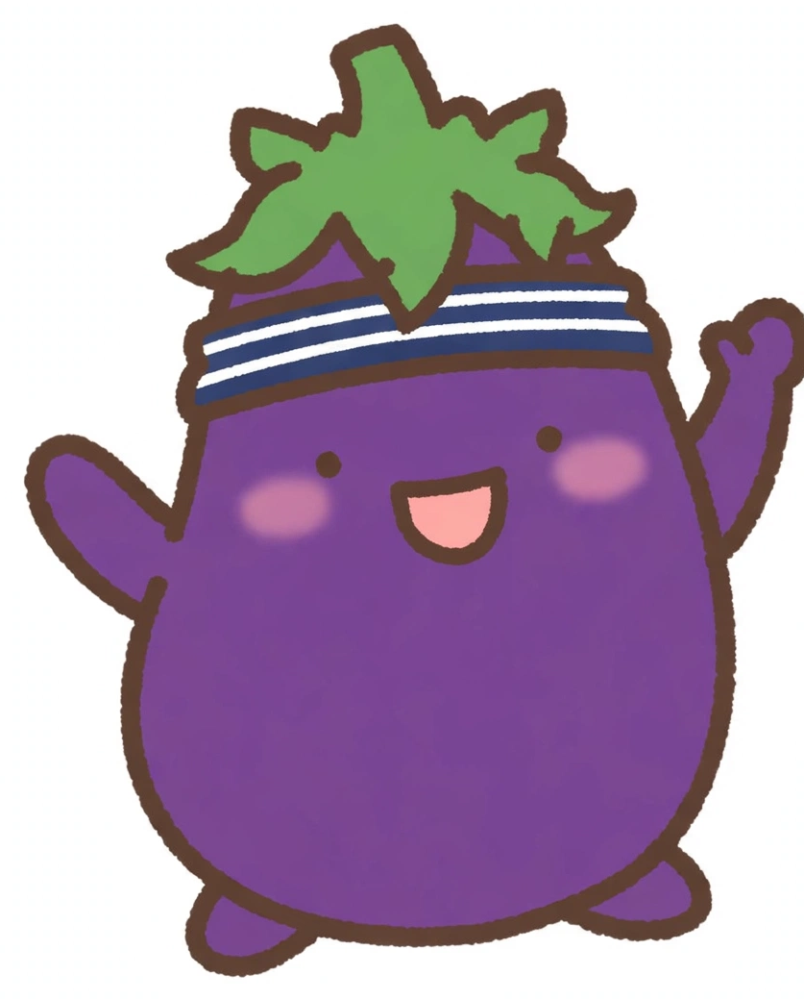
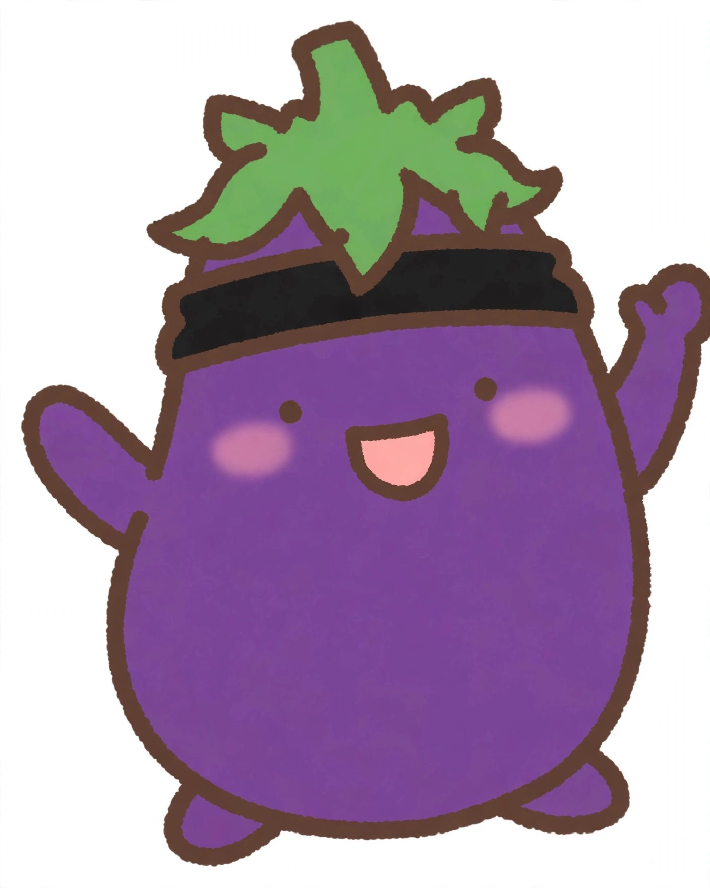
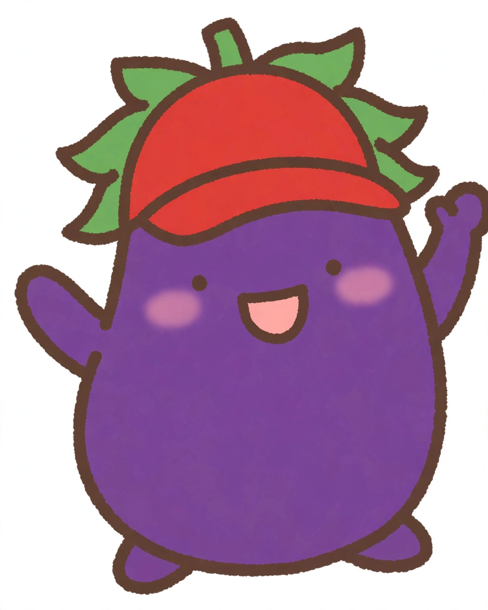
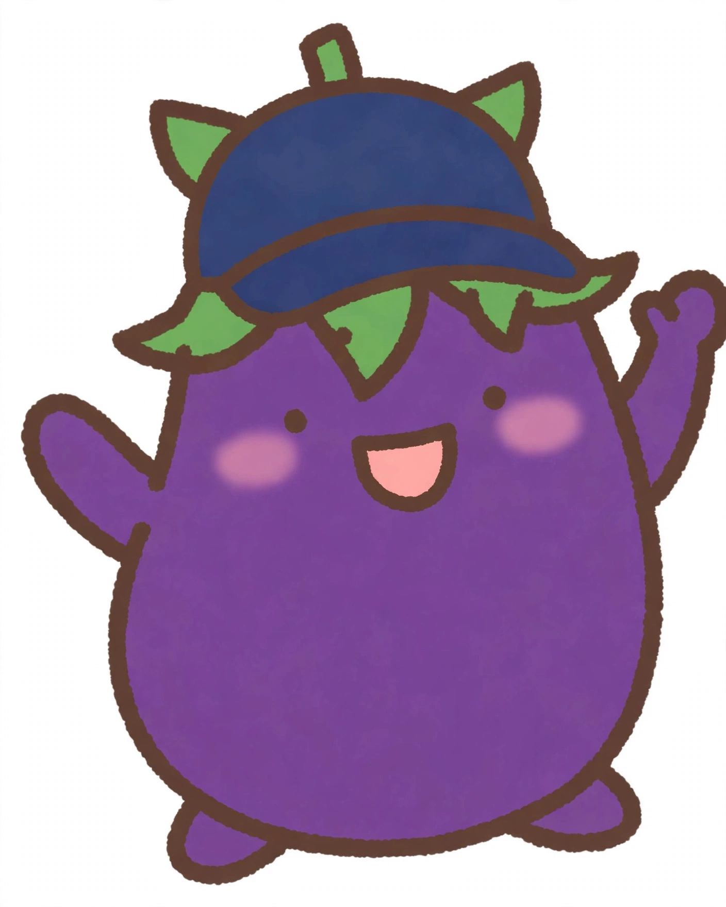
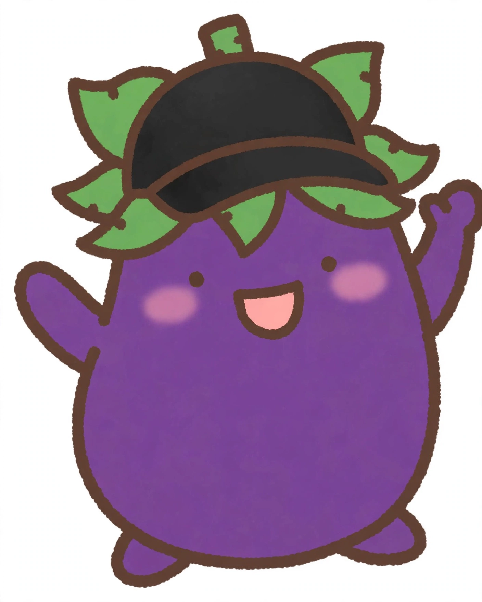

決定デザイン（案5「ゆるスポーティ」マット版）のナスだけ、頭アイテムを変えた4パターンです。
現行の縞ハチマキ版も並べています。5枚とも同じ基本ポーズで、顔・体・マットな質感はそのままです。
本番のスタンプ画像とネタ帳にはまだ反映していません。
変えたのは頭のアイテムだけです。キャップは3色（赤・紺・黒）とも、ナスのヘタの葉がキャップの周りに広がり、茎が後ろからちょこんと出る形でかぶせています。




